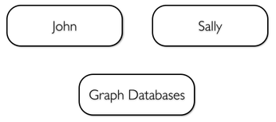
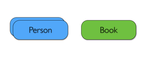
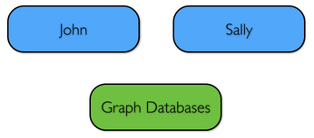
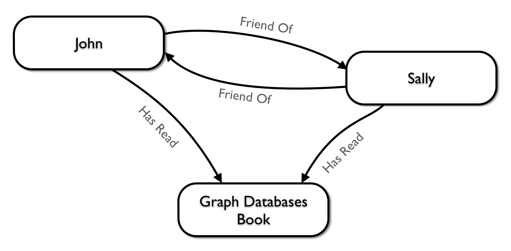

Graph Data Modeling Guidelines & Best Practices
The goal of this guide is to walk you through the graph data modeling lifecycle for Neo4j.
You should have a firm understanding of the property graph data model of Neo4j. You should understand the basics of Neo4j’s query language, Cypher.
Overview
This guide will introduce you to graph data modeling for Neo4j. You will be introduced to the basic process in which one takes an arbitrary domain and designs a graph data model for answering a wide range of business questions.
Introduction
Graph data modeling is the process in which a Neo4j user describes an arbitrary domain as a connected graph of nodes and relationships. From this description, a graph data model is designed to answer questions in the form of Cypher queries.
Describing a domain
The first step in creating a good graph data model is to describe your domain. Consider the following description of the connection between two people, Sally and John.
Two people, John and Sally, are friends. Both John and Sally have read the book, Graph Databases.
We can take this statement and identify labels, nodes, and relationships.
Nodes
The first entities that we’ll identify in our domain are the nodes. The Neo4j documentation describes nodes as:
The fundamental units that form a graph are nodes and relationships. In Neo4j, both nodes and relationships can contain properties. Nodes are often used to represent entities, but depending on the domain relationships may be used for that purpose as well. Apart from properties and relationships, nodes can also be labeled with zero or more labels.
— 3.1 Nodes

We can identify nodes as entities with a unique conceptual identity. In this case, these entities are outlined below in bold.
Two people, John and Sally, are friends. Both John and Sally have read the book, Graph Databases.
Which yields the nodes:
- John
- Sally
- Graph Databases

-
Recommended
- Neo4j Docs:
- 3.1. Nodes
Labels
In the documentation, labels are described as:
A label is a named graph construct that is used to group nodes into sets; all nodes labeled with the same label belongs to the same set. Many database queries can work with these sets instead of the whole graph, making queries easier to write and more efficient. A node may be labeled with any number of labels, including none, making labels an optional addition to the graph.
— 3.4 Labels

First we’ll start by identifying the roles of objects mentioned in the statement. We know that this statement is about two objects.
Two people, John and Sally, are friends. Both John and Sally have read the book, Graph Databases.
We can conclude that there are two labels within this graph:
- Person
- Book

Now that we have identified both our nodes and labels, we can assign the labels to the nodes that they describe. For John and Sally we apply the role Person. For Graph Databases we apply the role Book.

-
Recommended
- Neo4j Docs:
- 3.4. Labels
Relationships
Further, we can identify the interactions between these subjects:
- John is a friend of Sally
- Sally is a friend of John
- John has read Graph Databases
- Sally has read Graph Databases
Now that we have described the kinds of things in our domain as nodes with their labels, we can connect the nodes together to describe their interactions.
For a Person label, we can see that these kinds of nodes can be connected by the friend of relationship.
For a Book label, we can see that a Person can be connected to these nodes by a has read relationship.
Draw the data model
Now that we have identified the kinds of relationships that can exist between labels of nodes, we can complete our graph data model.

Answering questions
We have gone through the process of creating a basic graph data model for the interactions between people and books. We can take this data model further by defining attributes of these entities as key-value properties.
List your questions
First, start by listing your questions that you want to answer about your data.
- When did John and Sally become friends?
- What is the average rating of the book Graph Databases?
- Who is the author of the book Graph Databases?
- How old is Sally?
- How old is John?
- Who is older, Sally or John?
- Who read the book Graph Databases first, Sally or John?
From these list of questions, you can identify the attributes that must belong to entities within your data model.

-
Recommended
Create a sample dataset
Now that we have a complete graph data model for our domain that sufficiently answers our questions, we can go about creating a sample dataset using Cypher.
// Create Sally
CREATE (sally:Person { name: 'Sally', age: 29 })
// Create John
CREATE (john:Person { name: 'John', age: 27 })
// Create Graph Databases book
CREATE (gdb:Book { title: 'Graph Databases',
authors: ['Ian Robinson', 'Jim Webber'] })
// Connect Sally and John as friends
CREATE (sally)-[:FRIEND_OF { since: 1357718400 }]->(john)
// Connect Sally to Graph Databases book
CREATE (sally)-[:HAS_READ { rating: 4, on: 1360396800 }]->(gdb)
// Connect John to Graph Databases book
CREATE (john)-[:HAS_READ { rating: 5, on: 1359878400 }]->(gdb)Translate questions to Cypher queries
Now that we have a sample dataset of our graph data model, we can translate our questions from earlier into queries that sufficiently answer them.
When did John and Sally become friends?
MATCH (sally:Person { name: 'Sally' })
MATCH (john:Person { name: 'John' })
MATCH (sally)-[r:FRIEND_OF]-(john)
RETURN r.since as friends_sinceWhat is the average rating of the book Graph Databases?
MATCH (gdb:Book { title: 'Graph Databases' })
MATCH (gdb)<-[r:HAS_READ]-()
RETURN avg(r.rating) as average_ratingWho are the authors of the book Graph Databases?
MATCH (gdb:Book { title: 'Graph Databases' })
RETURN gdb.authors as authorsHow old is Sally?
MATCH (sally:Person { name: 'Sally' })
RETURN r.age as sally_ageHow old is John?
MATCH (john:Person { name: 'John' })
RETURN r.age as john_ageWho is older, Sally or John?
MATCH (people:Person)
WHERE people.name = 'John' OR people.name = 'Sally'
RETURN people.name as oldest
ORDER BY people.age DESC
LIMIT 1Who read the book Graph Databases first, Sally or John?
MATCH (people:Person)
WHERE people.name = 'John' OR people.name = 'Sally'
MATCH (people)-[r:HAS_READ]->(gdb:Book { title: 'Graph Databases' })
RETURN people.name as first_reader
ORDER BY r.on
LIMIT 1Stay Connected
Sign up to find out more about Neo4j's upcoming events & meetups.
© 2014 Neo Technology, Inc.
(graphs)-[:ARE]-›(everywhere)
With ♥ from Sweden & the Neo4j Community